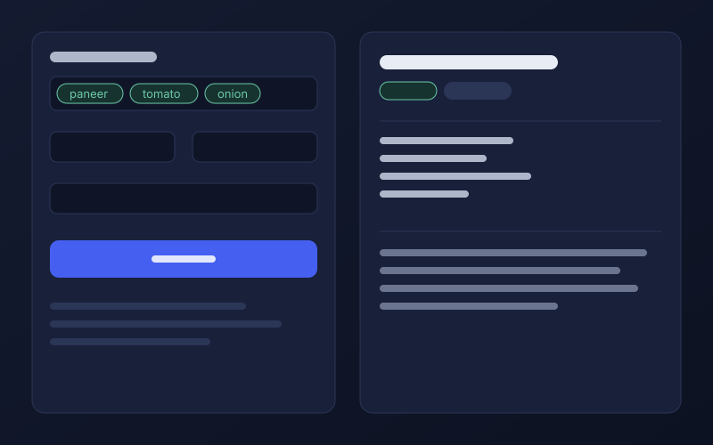
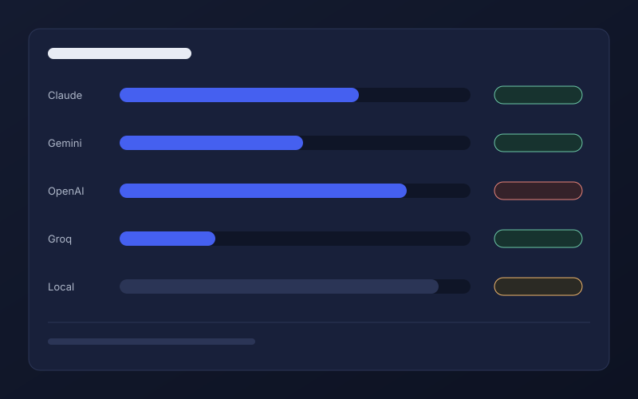
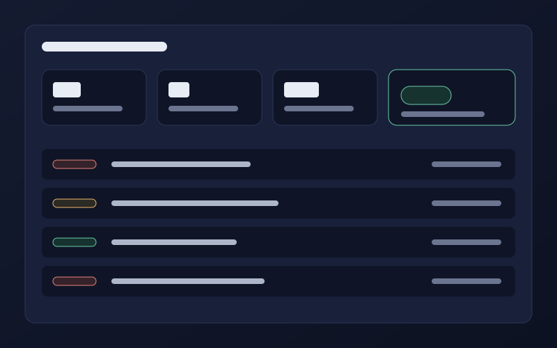

Generate
Add ingredients, pick a cuisine, diet and time, review the request, then generate. Save what you like and find it later by name, cuisine or difficulty.
Open the generator
Illustration. Replace with assets/screens/generator.png
Tell it what is in your kitchen. RecipeAI Sentinel screens the request, asks the models, validates every reply, and keeps a record of everything it blocked.
No account needed to generate. Sign in to save recipes and use the AI Lab.
5model providers, including one you can run locally
3checks on every request before a model sees it
11kinds of security event written to the audit log
2roles, with the rules enforced on the server
Ingredients are checked for bad input, prompt-injection attempts and script markup. A failed check stops the request here.
Claude, Gemini, OpenAI, Groq, then a local model. A provider with no key is skipped. If none answer, an offline generator still produces a recipe and says so.
A model's answer must match a strict recipe format before it is shown. Anything else is rejected and the next model is tried.
The recipe page lists which ingredients were used, whether your diet was respected, and anything unexpected.
Add ingredients, pick a cuisine, diet and time, review the request, then generate. Save what you like and find it later by name, cuisine or difficulty.
Open the generator
Illustration. Replace with assets/screens/generator.png
Send one request to every configured model at once. Compare how long each took and how well each recipe followed your ingredients and diet. Only measured values are shown.
Open the AI Lab
Illustration. Replace with assets/screens/ai-lab.png
Administrators see blocked requests, failed sign-ins and rate-limit hits as they were recorded, with a threat level for the last hour. When nothing has happened, every number is zero.
Open the Security Center
Illustration. Replace with assets/screens/security.png
Add an API key to .env and that provider joins the chain. Whether each one is available right now is shown live in the AI Lab, never assumed here.
Illustration. Replace with assets/demo.mp4
An object-oriented programming lab project: a C++ core, an Express API and a plain JavaScript frontend.
Bracketed items are placeholders. Replace them in landing.html.